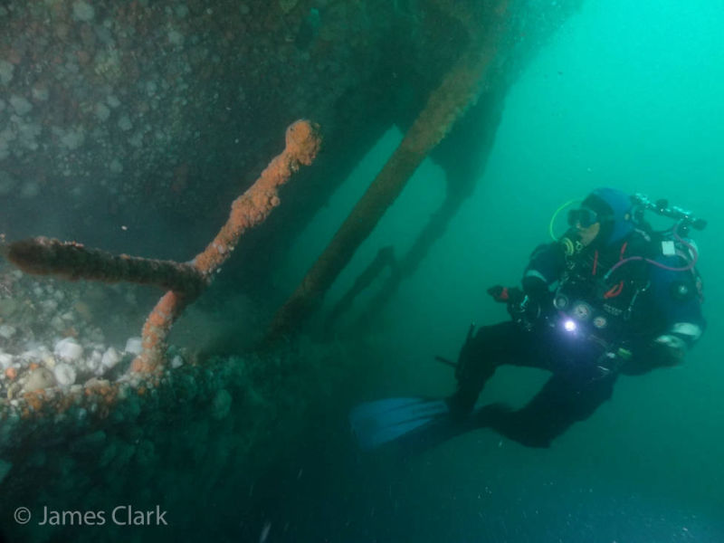
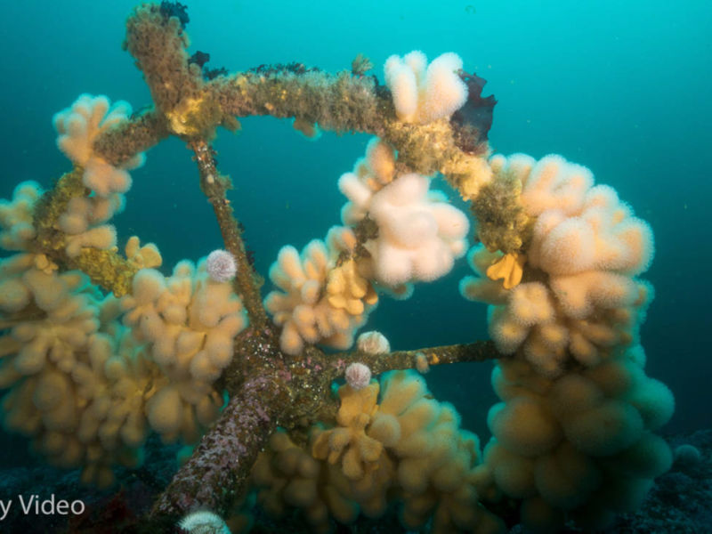
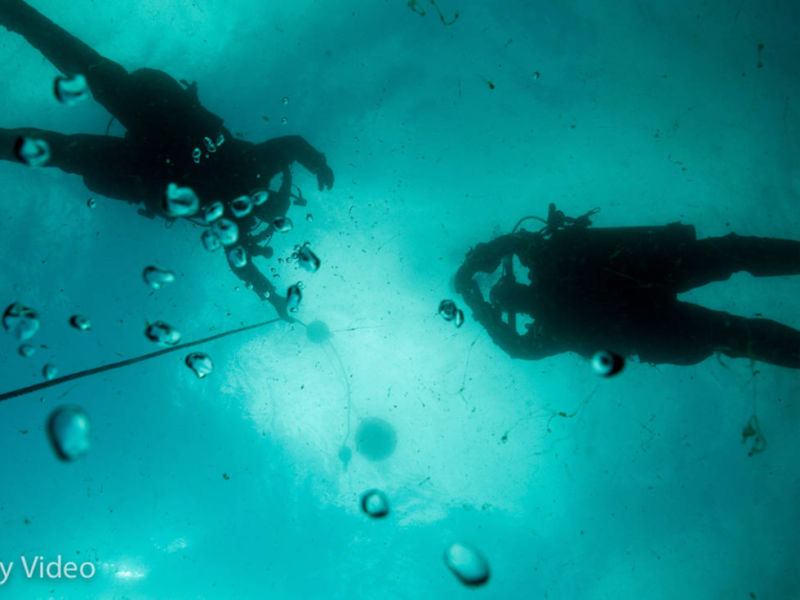
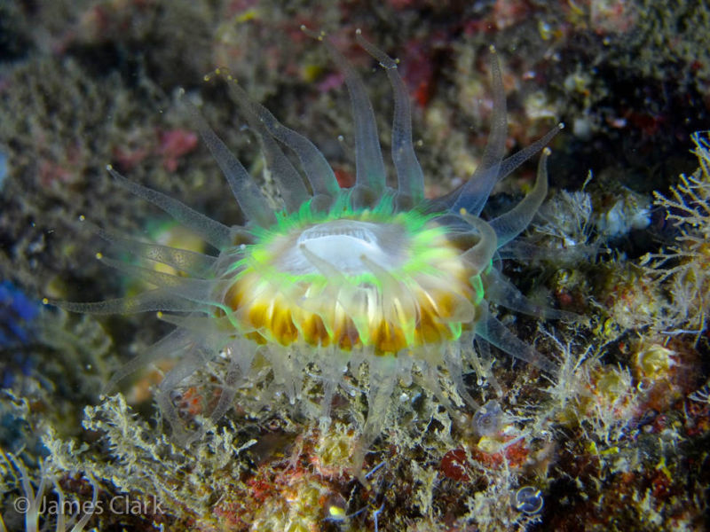
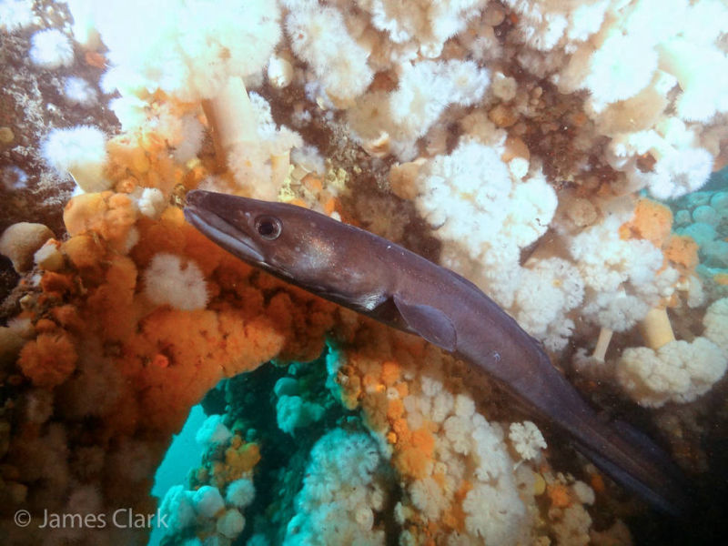
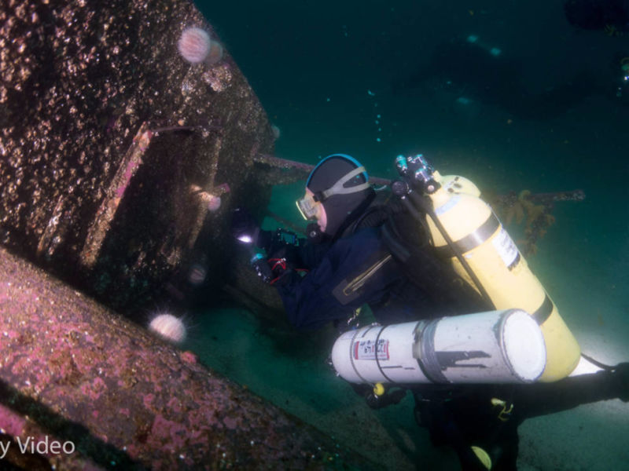
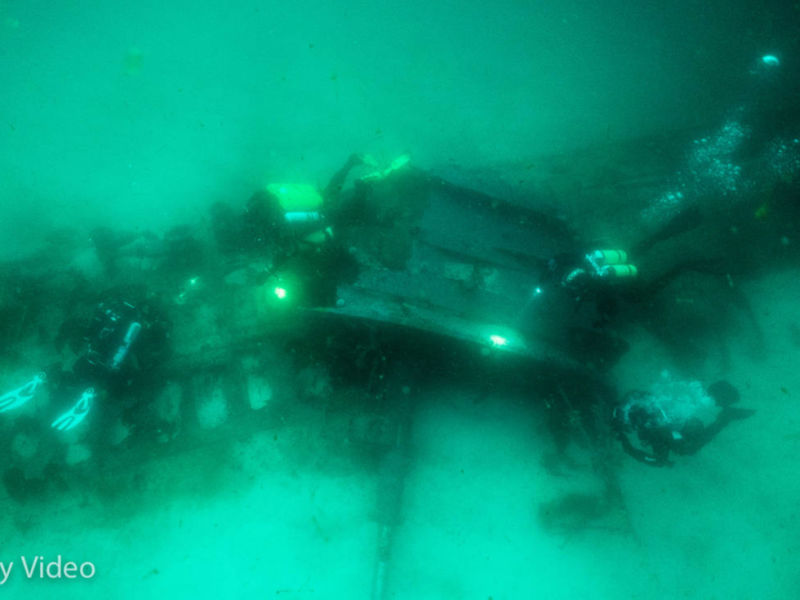

The wreck of the Hispania
CCR Diving in Mull

Auxillary Steering Gear

Divers Decompressing

Devonshire Cup Coral

Conger Eel

E49 Submarine, Shetland

E49 Submarine Conning Tower, Shetland

Follow me...